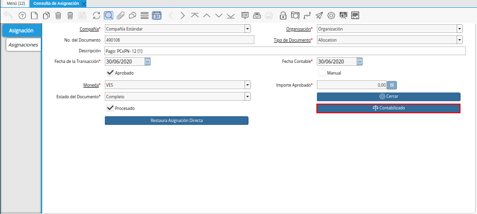

Proceso de Egreso
Requisición
Realice el procedimiento regular para generar una requisición en ADempiere, el mismo es explicado en el documento Registro de Requisición a Compra, elaborado por ERPyA.
Luego de que el documento de requisición se encuentre en estado “Completo”, seleccione la opción “Contabilizado”, ubicada en la parte inferior de la ventana “Requisición”.
Imagen 1. Opción Contabilizado de la Ventana Requisición

Podrá visualizar el asiento contable generado por la transacción anteriormente realizada en la ventana “Requisición”.
Imagen 2. Asiento Contable de la Ventana Requisición

Orden de Compra
Realice el procedimiento regular para generar una orden de compra directa en ADempiere, el mismo es explicado en el documento Registro de Orden de Compra Directa, elaborado por ERPyA.
Luego de que el documento de orden de compra se encuentre en estado “Completo”, seleccione la opción “Contabilizado”, ubicada en la parte inferior de la ventana “Órdenes de Compra”.
Imagen 3. Opción Contabilizado de la Ventana Órdenes de Compra

Podrá visualizar el asiento contable generado por la transacción anteriormente realizada en la ventana “Órdenes de Compra”.
Imagen 4. Asiento Contable de la Ventana Órdenes de Compra

Factura de Cuentas por Pagar
Realice el procedimiento regular para generar un documento por pagar en ADempiere, el mismo es explicado en el documento Registro de Documento por Pagar, elaborado por ERPyA.
Luego de que el documento de factura por pagar se encuentre en estado “Completo”, seleccione la opción “Contabilizado”, ubicada en la parte inferior de la ventana “Documentos por Pagar”.
Imagen 5. Opción Contabilizado de la Ventana Documentos por Pagar

Podrá visualizar el asiento contable generado por la transacción anteriormente realizada en la ventana “Documentos por Pagar”.
Imagen 6. Asiento Contable de la Ventana Documentos por Pagar

Asignación Factura/Recepción
Realice el procedimiento regular para generar una asignación en ADempiere, el mismo es explicado en el documento Asignación de Factura a Recepción, elaborado por ERPyA.
Luego de realizar por completo el procedimiento de asignación, seleccione la opción “Contabilizado”, ubicada en la parte inferior de la ventana “Facturas Asignadas a Recepciones”.
Imagen 7. Opción Contabilizado de la Ventana Facturas Asignadas a Recepciones

Podrá visualizar el asiento contable generado por la transacción anteriormente realizada en la ventana “Asignar OC-Recibo-Factura”.
Imagen 8. Asiento Contable de la Ventana Facturas Asignadas a Recepciones

Recepción
Realice el procedimiento regular para generar una recepción de productos en ADempiere, el mismo es explicado en el documento Registro de Recepción de Productos, elaborado por ERPyA.
Luego de que el documento de recepción de productos se encuentre en estado “Completo”, seleccione la opción “Contabilizado”, ubicada en la parte inferior de la ventana “Recepción de Productos”.
Imagen 9. Opción Contabilizado de la Ventana Recepción de Productos

Podrá visualizar el asiento contable generado por la transacción anteriormente realizada en la ventana “Recepción de Productos”.
Imagen 10. Asiento Contable de la Ventana Recepción de Productos

Pago
Realice el procedimiento regular para generar un pago en ADempiere, el mismo es explicado en el documento Registro de Pago, elaborado por ERPyA.
Luego de que el documento pago se encuentre en estado “Completo”, seleccione la opción “Contabilizado”, ubicada en la parte inferior de la ventana “Pago/Cobro”.
Imagen 11. Opción Contabilizado de la Ventana Pago Cobro

Podrá visualizar el asiento contable generado por la transacción anteriormente realizada en la ventana “Pago/Cobro”.
Imagen 12. Asiento Contable de la Ventana Pago Cobro

Asignación de Factura/Pago
Ubique el documento de factura por pagar asociado al pago y seleccione la pestaña “Pagos Asignados” para visualizar la asignación generada por la transacción realizada entre la factura y el pago.
Imagen 13. Asignación Factura Pago
Note
La asignación “Factura/Pago”, es generada automáticamente después de completar el documento “Pago”, asociado a la factura.

Al hacer clic contrario sobre el campo “Asignación” en la pestaña “Pagos Asignados” de la ventana “Documentos por Pagar” y seleccionar la opción “Acercar”, podrá visualizar el documento de asignación donde debe seleccionar la opción “Contabilizado”, ubicado en la parte inferior de la ventana “Consulta de Asignación”.

Imagen 14. Opción Contabilizado de la Ventana Consulta de Asignación
Podrá visualizar el asiento contable generado por la transacción anteriormente explicada.
Imagen 15. Asiento Contable de la Asignación Factura/Pago

Conciliación
Realice el procedimiento regular para generar una conciliación en ADempiere, el mismo es explicado en el documento Registro de Conciliación Automática, elaborado por ERPyA.
Luego de que el documento de conciliación automática se encuentre en estado “Completo”, seleccione la opción “Contabilizado”, ubicada en la parte inferior de la ventana “Estado de Cuentas Bancario”.
Imagen 16. Opción Contabilizado de la Ventana Estado de Cuentas Bancario

Podrá visualizar el asiento contable generado por la transacción anteriormente realizada en la ventana “Estado de Cuentas Bancario”.
Imagen 17. Asiento Contable de la Ventana Estado de Cuentas Bancario